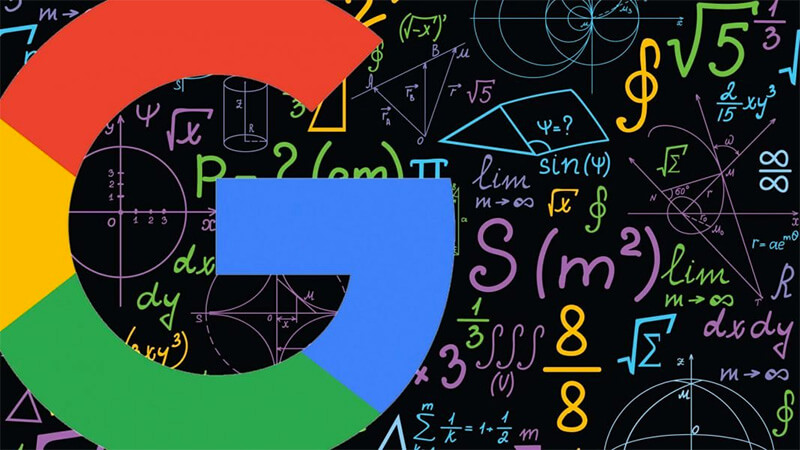
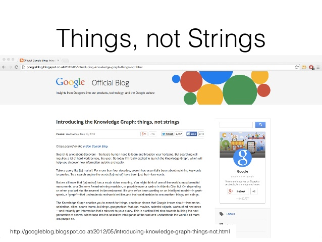
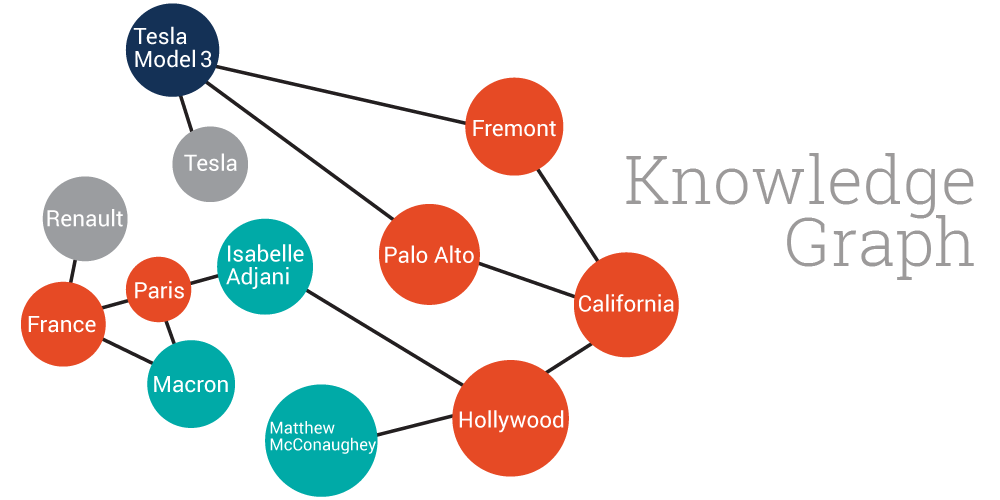

MỘT SỐ KHÁI NIỆM
MỤC LỤC
Things, not Strings
Knowledge Graph (Sơ đồ tri thức)

1. Things, not Strings
Khái niệm này có từ 6/2012 trong một bài báo có tên là “Inside the Knowledge Graph:Things, Not Strings,”
có tên là “Inside the Knowledge Graph:Things, Not Strings,” việc tìm kiếm hiện nay
là làm thế nào để nhận diện các đối tượng chứ không đơn thuần tìm kiếm là từ khóa kết nối
trong các tài liệu web.

2. Knowledge Graph
Việc tìm kiếm thông tin tri thức để mở rộng tầm nhìn của mình là nhu cầu cơ bản
của con người. Nhưng việc tìm kiếm này vẫn hỏi rất nhiều công sức của chúng ta. Vậy làm thế nào
để có thể tối ưu nó, dùng ít thời gian hơn nhưng vẫn khám phá được thông tin mà mình muốn?
Đó là cách làm Google đã thực hiện trong năm 2012.
